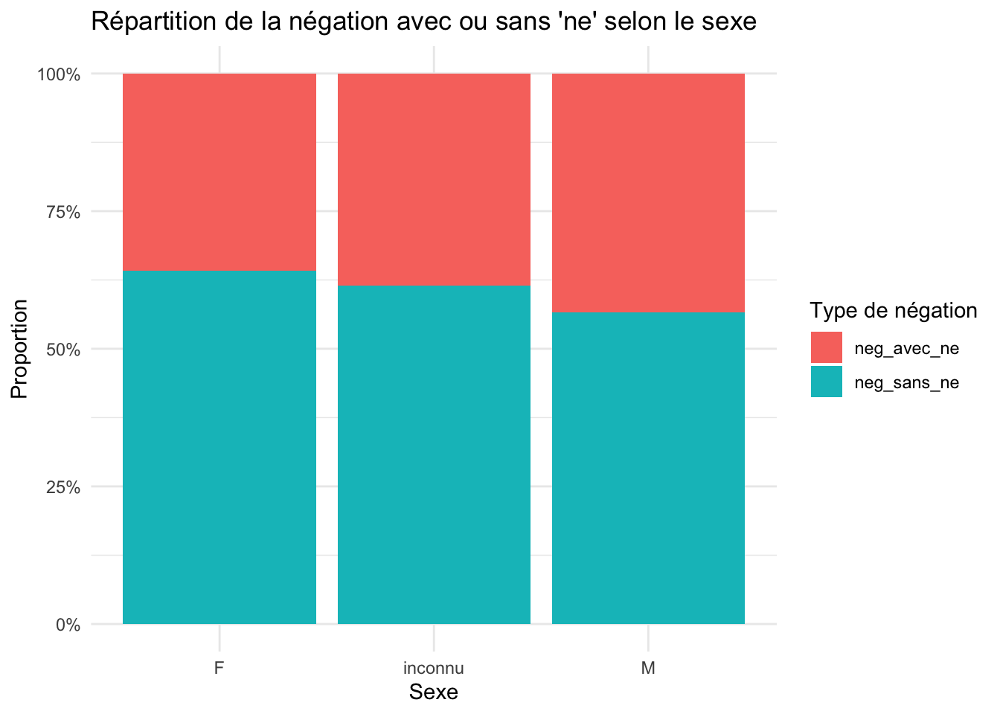
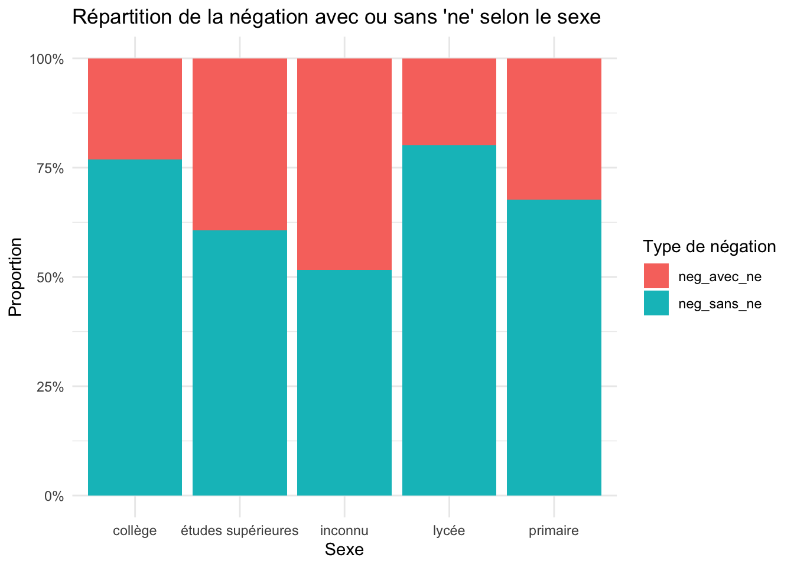
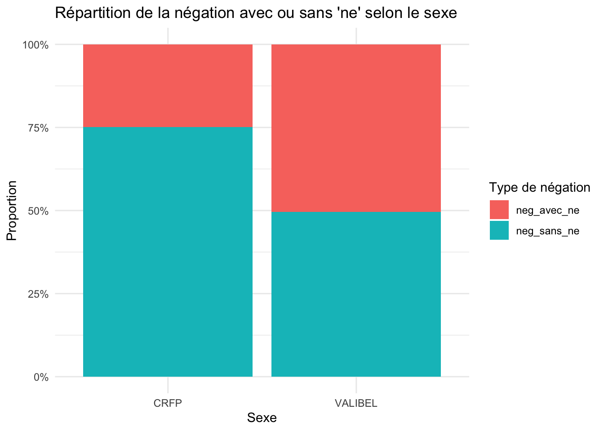

library(here)here() starts at /Users/jeremy-ua/Documents/Work/Teaching/1_KUL/2026-2027/Teaching_Materials# Charge le fichier depuis la racine du projet
corpus_data <- read.csv(here("francais-moderne","chapters", "corpus", "corpus_data.csv"))| Corpus | Description & Contenu | Volume Orféo / Total | Source & Référence |
|---|---|---|---|
| CFPP2000 | Interviews conversationnelles sur les quartiers de Paris et sa proche banlieue. | ~50 h / >700 000 mots (volume Orféo moindre, date antérieure) |
|
| CLAPI | Interactions multimédias en situation naturelle (professionnelle, médicale, classe, etc.). | ~17 h / ~170 000 mots (sous-ensemble natif) | Lien |
| C-ORAL-ROM | Corpus comparatifs de langue spontanée des principales langues romanes (FR, IT, PT, ES). | Totalité partie FR (123 h / 772 textes au total) | Lien |
| CRFP | Échantillons de français parlé dans ~40 villes selon divers profils de locuteurs (aligné texte/son). | Totalité (~36 h / 440 000 mots / 134 enregistrements) | Lien |
| FLEURON | Situations de la vie universitaire et quotidienne pour étudiants étrangers. | ~3 h / 35 000 mots | Lien |
| FRENCH ORAL NARRATIVE | Contes oraux (87 contes par 18 conteurs du CLiO à Vendôme) annotés en TEI. | Totalité | Lien |
| OFROM | Entretiens et interactions enregistrés en Suisse romande (aligné texte/son). | >25 h / ~300 000 mots (actuellement ~80 h / ~1M mots) | Lien |
| TCOF | Interactions adultes-enfants et conversations/récits entre adultes (+ coll. Debaisieux & Caddeo). | ~23 h / ~300 000 mots | Lien |
| TUFS | Entretiens recueillis dans des universités françaises (Aix, Paris, Bordeaux) par l’Univ. de Tokyo. | Totalité (~54 h / >750 000 mots) | Lien |
| Valibel | Enregistrements de productions orales en Belgique (Bruxelles et Wallonie). | ~43 h / 500 000 mots (sur 373 h au total) | Lien |
| Corpus | Description & Contenu | Volume Orféo / Total | Source & Référence |
|---|---|---|---|
| ANNODIS | Textes diversifiés enrichis en structures discursives (Est Républicain, Wikipédia, CMLF 2008, IFRI). | Totalité (687 000 mots) | Lien |
| Chambers-Rostand | Presse quotidienne française (Le Monde, L’Humanité, La Dépêche du Midi). | Totalité (979 831 mots / 1 723 articles) | Lien |
| CoMeRe | Communication médiée par les réseaux (blogs, tweets, SMS, courriels, forums, etc.) structurée en TEI/CLARIN/OLAC. | Noyau de corpus | Lien |
| Frantext (Libre) | Sous-corpus littéraire (romans et essais hors théâtre/poésie, 1890–1921). | Totalité (~1,8 million de tokens / 22 œuvres) | Lien |
| Est Républicain | Presse Quotidienne Régionale (PQR) du CNRTL (3 éditions quotidiennes d’avril 2002). | Totalité (927 035 tokens) | Lien |
library(here)here() starts at /Users/jeremy-ua/Documents/Work/Teaching/1_KUL/2026-2027/Teaching_Materials# Charge le fichier depuis la racine du projet
corpus_data <- read.csv(here("francais-moderne","chapters", "corpus", "corpus_data.csv"))Il faut toujours vérifier les données que l’on a télécharger !
head(corpus_data) word_nr form lemma upos xpos start_time end_time speaker
1 1 voilà voilà INT INT 0.18 0.39 L1
2 2 nous moi PRO PRO 0.40 0.49 L1
3 3 nous nous CLS CLS 0.50 0.65 L1
4 4 étions être VRB VRB 0.66 1.01 L1
5 5 interrompu interrompre VPP VPP 1.02 1.79 L1
6 6 au à+le PRE PRE 2.44 2.76 L1
file utterance name_recording sex age
1 PRI-AIX-1.orfeo cefc-crfp-PRI-AIX-1-1 PRI-AIX-1 M 61+
2 PRI-AIX-1.orfeo cefc-crfp-PRI-AIX-1-1 PRI-AIX-1 M 61+
3 PRI-AIX-1.orfeo cefc-crfp-PRI-AIX-1-1 PRI-AIX-1 M 61+
4 PRI-AIX-1.orfeo cefc-crfp-PRI-AIX-1-1 PRI-AIX-1 M 61+
5 PRI-AIX-1.orfeo cefc-crfp-PRI-AIX-1-1 PRI-AIX-1 M 61+
6 PRI-AIX-1.orfeo cefc-crfp-PRI-AIX-1-1 PRI-AIX-1 M 61+
education occupation birth_place native_language
1 études supérieures inconnu (retraité) Centre de la France français
2 études supérieures inconnu (retraité) Centre de la France français
3 études supérieures inconnu (retraité) Centre de la France français
4 études supérieures inconnu (retraité) Centre de la France français
5 études supérieures inconnu (retraité) Centre de la France français
6 études supérieures inconnu (retraité) Centre de la France français
source_file corpus setting_place duration
1 PRI-AIX-1.xml CRFP France, PACA, Marseille 00:15:17
2 PRI-AIX-1.xml CRFP France, PACA, Marseille 00:15:17
3 PRI-AIX-1.xml CRFP France, PACA, Marseille 00:15:17
4 PRI-AIX-1.xml CRFP France, PACA, Marseille 00:15:17
5 PRI-AIX-1.xml CRFP France, PACA, Marseille 00:15:17
6 PRI-AIX-1.xml CRFP France, PACA, Marseille 00:15:17
audio_quality interaction sector channel
1 #peu_bruité #NULL #script Daniel Hirst narration privé face_à_face
2 #peu_bruité #NULL #script Daniel Hirst narration privé face_à_face
3 #peu_bruité #NULL #script Daniel Hirst narration privé face_à_face
4 #peu_bruité #NULL #script Daniel Hirst narration privé face_à_face
5 #peu_bruité #NULL #script Daniel Hirst narration privé face_à_face
6 #peu_bruité #NULL #script Daniel Hirst narration privé face_à_face
modality audio_file
1 oral PRI-AIX-1.wav
2 oral PRI-AIX-1.wav
3 oral PRI-AIX-1.wav
4 oral PRI-AIX-1.wav
5 oral PRI-AIX-1.wav
6 oral PRI-AIX-1.wav
textgrid_path
1 /Users/jeremy-ua/Documents/Research/Projects/2026_Belgian_Devoicing/Data/output.MFA/L1_PRI-AIX-1/cefc-crfp-PRI-AIX-1-1.TextGrid
2 /Users/jeremy-ua/Documents/Research/Projects/2026_Belgian_Devoicing/Data/output.MFA/L1_PRI-AIX-1/cefc-crfp-PRI-AIX-1-1.TextGrid
3 /Users/jeremy-ua/Documents/Research/Projects/2026_Belgian_Devoicing/Data/output.MFA/L1_PRI-AIX-1/cefc-crfp-PRI-AIX-1-1.TextGrid
4 /Users/jeremy-ua/Documents/Research/Projects/2026_Belgian_Devoicing/Data/output.MFA/L1_PRI-AIX-1/cefc-crfp-PRI-AIX-1-1.TextGrid
5 /Users/jeremy-ua/Documents/Research/Projects/2026_Belgian_Devoicing/Data/output.MFA/L1_PRI-AIX-1/cefc-crfp-PRI-AIX-1-1.TextGrid
6 /Users/jeremy-ua/Documents/Research/Projects/2026_Belgian_Devoicing/Data/output.MFA/L1_PRI-AIX-1/cefc-crfp-PRI-AIX-1-1.TextGrid
alignment_status
1 aligned
2 aligned
3 aligned
4 aligned
5 aligned
6 alignedDe quoi a-t-on besoin comme information ?
pas
library(dplyr)Warning: package 'dplyr' was built under R version 4.4.3
Attaching package: 'dplyr'The following objects are masked from 'package:stats':
filter, lagThe following objects are masked from 'package:base':
intersect, setdiff, setequal, union# 1. Filter for utterances with "pas"
selection_negation <- corpus_data %>%
group_by(utterance) %>%
filter(any(lemma == "pas")) %>%
ungroup()
# 2. Print the number of unique utterances
cat("Number of utterances containing 'pas':", n_distinct(selection_negation$utterance), "\n")Number of utterances containing 'pas': 11080 # 3. Filter for utterances that contain ADN but do NOT contain NOM
final_selection <- selection_negation %>%
group_by(utterance) %>%
filter(any(upos == "ADN") & !any(upos == "NOM")) %>%
ungroup()
# Print result count
cat("Number of matching utterances:", n_distinct(final_selection$utterance), "\n")Number of matching utterances: 3692 corpus_annote <- corpus_data %>%
group_by(utterance) %>%
mutate(
tag_negation = case_when(
# Si le mot courant est 'pas' et qu'il y a un 'ne' situé plus haut dans l'énoncé
lemma == "pas" & any(lemma == "ne" & word_nr < word_nr[lemma == "pas"][1]) ~ "neg_avec_ne",
# Si le mot courant est 'pas' mais sans 'ne' avant
lemma == "pas" ~ "neg_sans_ne",
# Pour tous les autres mots
TRUE ~ NA_character_
)
) %>%
ungroup()corpus_annote %>%
filter(lemma == "pas") %>%
count(tag_negation)# A tibble: 2 × 2
tag_negation n
<chr> <int>
1 neg_avec_ne 4828
2 neg_sans_ne 7266corpus_annote %>%
group_by(age) %>%
filter(lemma == "pas") %>%
count(tag_negation)# A tibble: 9 × 3
# Groups: age [5]
age tag_negation n
<chr> <chr> <int>
1 0-15 neg_sans_ne 3
2 16-20 neg_avec_ne 434
3 16-20 neg_sans_ne 444
4 21-60 neg_avec_ne 2817
5 21-60 neg_sans_ne 4789
6 61+ neg_avec_ne 783
7 61+ neg_sans_ne 870
8 inconnu neg_avec_ne 794
9 inconnu neg_sans_ne 1160library(dplyr)
library(ggplot2)Warning: package 'ggplot2' was built under R version 4.4.3# 1. Calcul du comptage et des pourcentages par sexe
frequence_negation <- corpus_annote %>%
filter(lemma == "pas") %>%
group_by(sex, tag_negation) %>%
summarise(effectif = n(), .groups = "drop_last") %>%
mutate(proportion = effectif / sum(effectif) * 100)
# Afficher la table récapitulative dans la console
print(frequence_negation)# A tibble: 6 × 4
# Groups: sex [3]
sex tag_negation effectif proportion
<chr> <chr> <int> <dbl>
1 F neg_avec_ne 1966 35.8
2 F neg_sans_ne 3522 64.2
3 M neg_avec_ne 2857 43.3
4 M neg_sans_ne 3736 56.7
5 inconnu neg_avec_ne 5 38.5
6 inconnu neg_sans_ne 8 61.5# 2. Graphique en barres empilées à 100% (Proportions)
ggplot(frequence_negation, aes(x = sex, y = proportion, fill = tag_negation)) +
geom_bar(stat = "identity", position = "fill") +
scale_y_continuous(labels = scales::percent) +
labs(
title = "Répartition de la négation avec ou sans 'ne' selon le sexe",
x = "Sexe",
y = "Proportion",
fill = "Type de négation"
) +
theme_minimal()
library(dplyr)
library(ggplot2)
# 1. Calcul du comptage et des pourcentages par sexe
frequence_negation <- corpus_annote %>%
filter(lemma == "pas") %>%
group_by(education, tag_negation) %>%
summarise(effectif = n(), .groups = "drop_last") %>%
mutate(proportion = effectif / sum(effectif) * 100)
# Afficher la table récapitulative dans la console
print(frequence_negation)# A tibble: 10 × 4
# Groups: education [5]
education tag_negation effectif proportion
<chr> <chr> <int> <dbl>
1 collège neg_avec_ne 232 23.1
2 collège neg_sans_ne 774 76.9
3 inconnu neg_avec_ne 2374 48.4
4 inconnu neg_sans_ne 2527 51.6
5 lycée neg_avec_ne 207 19.8
6 lycée neg_sans_ne 837 80.2
7 primaire neg_avec_ne 41 32.3
8 primaire neg_sans_ne 86 67.7
9 études supérieures neg_avec_ne 1974 39.4
10 études supérieures neg_sans_ne 3042 60.6# 2. Graphique en barres empilées à 100% (Proportions)
ggplot(frequence_negation, aes(x = education, y = proportion, fill = tag_negation)) +
geom_bar(stat = "identity", position = "fill") +
scale_y_continuous(labels = scales::percent) +
labs(
title = "Répartition de la négation avec ou sans 'ne' selon le sexe",
x = "Sexe",
y = "Proportion",
fill = "Type de négation"
) +
theme_minimal()
library(dplyr)
library(ggplot2)
# 1. Calcul du comptage et des pourcentages par sexe
frequence_negation <- corpus_annote %>%
filter(lemma == "pas") %>%
group_by(corpus, tag_negation) %>%
summarise(effectif = n(), .groups = "drop_last") %>%
mutate(proportion = effectif / sum(effectif) * 100)
# Afficher la table récapitulative dans la console
print(frequence_negation)# A tibble: 4 × 4
# Groups: corpus [2]
corpus tag_negation effectif proportion
<chr> <chr> <int> <dbl>
1 CRFP neg_avec_ne 1237 24.9
2 CRFP neg_sans_ne 3733 75.1
3 VALIBEL neg_avec_ne 3591 50.4
4 VALIBEL neg_sans_ne 3533 49.6# 2. Graphique en barres empilées à 100% (Proportions)
ggplot(frequence_negation, aes(x = corpus, y = proportion, fill = tag_negation)) +
geom_bar(stat = "identity", position = "fill") +
scale_y_continuous(labels = scales::percent) +
labs(
title = "Répartition de la négation avec ou sans 'ne' selon le sexe",
x = "Sexe",
y = "Proportion",
fill = "Type de négation"
) +
theme_minimal()
attention
jamais